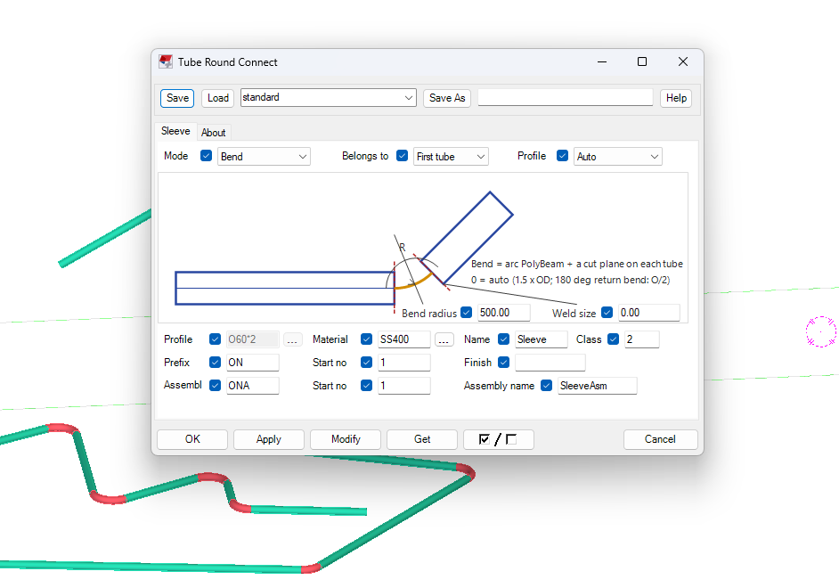

iVidLab Tube Round Connect 1.12 — Nối ống tròn ở mọi hướng trong không gian
Ống nằm ngang, dựng đứng hay chéo nhau: chọn hai ống, component tự nối. Bản 1.12 còn cho đặt tên và số assembly cho đoạn nối ngay trong hộp thoại.
Có gì mới trong 1.12
- Nối ống ở mọi hướng: ống dựng đứng, ống xiên, hai ống lệch hoặc chéo nhau.
- Đặt tên và số assembly cho đoạn nối khi không dùng mối hàn.

1. Nối ống ở mọi hướng trong không gian
Trước đây ống nằm trên mặt phẳng ngang nối thuận tiện, còn ống dựng đứng hoặc lệch hướng thì khó hơn. Từ 1.12, bạn chọn hai ống bất kỳ: ống thẳng đứng, ống xiên, hai ống vẽ tay lệch nhau vài centimet, hay chéo nhau hẳn. Component tự tìm đường nối mượt, tiếp xúc cả hai ống.
- Hai ống không đồng phẳng, không giao nhau vẫn nối được.
- Hai ống song song nhưng lệch trục được nối thành đoạn chữ S.
- Vẫn đủ hai chế độ: ống lồng (Straight sleeve) và cút (Bend), cút ở mọi góc kể cả quay đầu 180 độ.
2. Đặt tên và số assembly cho đoạn nối
Khi không dùng mối hàn (Weld size = 0), đoạn nối là một assembly riêng. Hộp thoại có thêm ô Assembly (prefix, số bắt đầu) và Assembly name để bản vẽ và danh sách chi tiết gọn, đúng quy ước công ty. Giá trị mặc định đặt sẵn, sửa được.
Khi có mối hàn, đoạn nối thuộc assembly của ống nên các ô này tự mờ đi.
3. Cài đặt
- Ở mục Tải về bên dưới, chọn phiên bản Tekla đang dùng để tải gói
.tsep(từ Tekla 2016 trở lên). - Nếu đã cài bản cũ, gỡ trong Tekla Extension Manager trước.
- Nhấp đúp file
.tsep, tick phiên bản Tekla rồi bấm Import. Gói được cài khi Tekla khởi động lần tiếp theo.
iVidLab Tube Round Connect 1.12 — Joining round tubes in any direction in space
Horizontal, vertical or crossing: pick two tubes and the component joins them. Version 1.12 also lets you set the assembly prefix and name of the joint right in the dialog.
What is new in 1.12
- Join tubes in any direction: vertical tubes, sloped tubes, offset or crossing tubes.
- Assembly prefix and name for the joint when no weld is used.
1. Joining tubes in any direction in space
Tubes lying on a horizontal plane used to be the easy case; vertical or off-direction tubes were harder. From 1.12 you can pick any two tubes: vertical, sloped, hand-drawn a few centimetres out of line, or fully crossing. The component finds a smooth path that meets both tubes.
- Two tubes that are not in the same plane and do not intersect can still be joined.
- Two parallel tubes with offset axes are joined with an S-shaped piece.
- Both modes remain: straight sleeve and bend, with the bend working at any angle including a 180-degree return.
2. Assembly prefix and name for the joint
When no weld is used (Weld size = 0), the joint is its own assembly. The dialog now has Assembly (prefix, start number) and Assembly name fields, so drawings and part lists stay tidy and follow your company convention. Sensible defaults are preset and can be changed.
With a weld, the joint belongs to the tube assembly, so these fields are greyed out.
3. Installing
- In the Download section below, select your Tekla version to get the
.tseppackage (Tekla 2016 or newer). - If an older version is installed, uninstall it in Tekla Extension Manager first.
- Double-click the
.tsepfile, tick your Tekla version and click Import. The package is installed the next time Tekla starts.
Tải vềDownload

Nhóm Zalo người dùng iViDLabiViDLab user group on Zalo
Quét mã QR hoặc bấm nút bên cạnh để vào nhóm: hỏi đáp khi sử dụng, báo lỗi và nhận thông báo bản cập nhật mới.
Scan the QR code or use the button to join the group: usage questions, bug reports and new release announcements.
Liên hệ iViDLabContact iViDLab
Theo dõi fanpage Facebook hoặc gửi email để được hỗ trợ và góp ý.
Follow the Facebook page or send an email for support and feedback.